Создание игр в Roblox Studio
Знакомство с Roblox Studio. Сборка первой игры
Начало работы в Roblox Studio
Основные понятия
Roblox Studio — это собственный движок Roblox, разрабатываемый и поддерживаемый Roblox Corporation, позволяющий каждому пользователю создавать и опубликовывать игры любых жанров в неограниченном количестве, но исключительно на самой платформе.
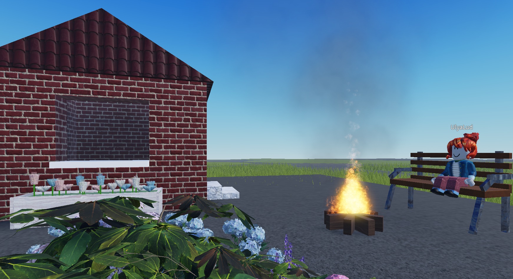На 30 июня 2022 года более 12 млн пользователей Roblox создали минимум один опыт на Roblox Studio.
Игровой движок — это набор инструментов, с помощью которых разработчики игр создают графику и звук, обеспечивают перемещение персонажей, генерируют физические эффекты и графические сцены. Игровой движок позволяет разработчикам воплощать свои фантазии в реальность, сосредоточившись на идее, а не на технических деталях. То есть новым разработчикам не надо ломать голову над созданием какой-то базовой задачи, она уже будет воплощена в движке.
После входа в Roblox Studio можно увидеть окно создания проектов. Roblox по умолчанию нам предлагает уже созданные шаблоны игр для быстрого старта в разработке игры.
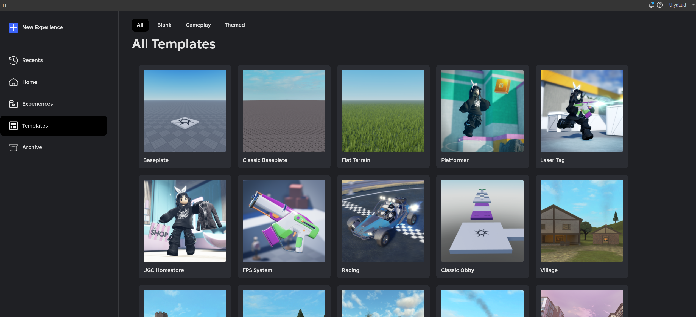Мы начнем знакомство с шаблона Classic Obby (паркур).
Изучаем интерфейс
Для начала расположим окна, закроем лишнее в соответствии со следующей картинкой:
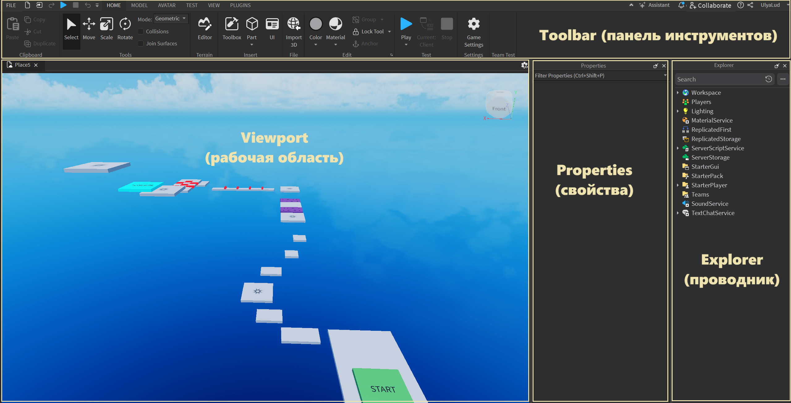- Toolbar - панель инструментов для работы с нашей игрой. Настройка перемещения, выделения, вращения, цвета, материала и ещё много всего. Важно заметить, что здесь есть несколько вкладок, между которыми можно перемещаться.
- Viewport - самое главное окно. Окно просмотра нашей игры, именно здесь мы будем видеть все наши объекты и эффекты, а также, конечно же, играть!
- Properties - свойства. Окно «Свойства» позволяет просматривать и редактировать значения свойств и атрибуты одного или нескольких выделенных объектов.
- Explorer - проводник. Окно со списком всех объектов в нашей игре.
Если по какой-то причине окна закрылись, их можно открыть во вкладке View:
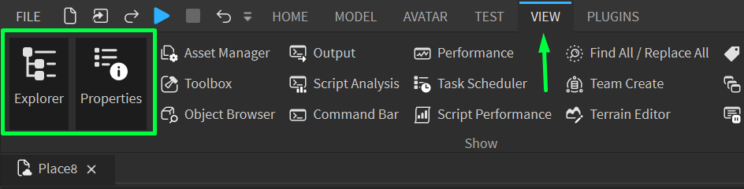Управление
- Чтобы управлять камерой, нам нужно двигать мышью с зажатой правой кнопкой.
- Чтобы приблизиться или отдалиться, используем колесико мыши.
- Чтобы передвигать персонажа, используем кнопки W, A, S, D. (Как в играх)
Инструменты работы с объектами
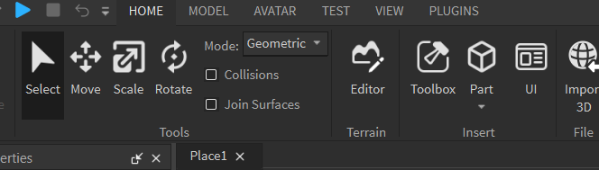Первый инструмент - Select
Это базовый инструмент, который позволяет выбирать объекты без отображения осей и манипуляторов, в отличие от других инструментов. При помощи Select можно выбрать один из блоков или несколько. Чтобы выбрать несколько надо зажать CTRL и нажать по нужным блокам. Выбранные блоки выделятся голубой рамкой.
Второй инструмент - Move
Данный инструмент позволяет двигать выделенные объекты. Когда объект выбран можно увидеть оси направления. Всего осей три: 1 влево - вправо, 2 вниз-вверх, 3 назад-вперед.
Есть два способа перемещения объектов:
- Перемещение при помощи стрелок (строгое перемещение по определенной оси)
- Перемещение за центр (схватить курсором и переместить) - часто перемещает не совсем как хочется, но может быть полезным при соединении элементов вместе
Третий инструмент - Scale
Он позволяет быстро изменять размеры объектов. Перетягивая кружочки(сферы), вы изменяете размеры по одной из осей. Если зажать при этом Ctrl, размер будет изменяться симметрично.
Последний инструмент - Rotate
Он позволяет поворачивать объекты в пространстве вокруг одной из осей. Шаг поворота можно изменить во вкладке Model - Rotate (по умолчанию 45 градусов, можно изменить на 10 или 5)
Создание и редактирование объектов
Теперь узнаем, как мы можем создать свои собственные объекты. Это делается при помощи кнопки Part (деталь).
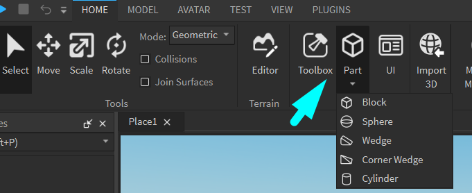Детали создаются ровно в центре экрана, желательно, чтобы перед камерой уже находился какой-нибудь блок, иначе новый появится довольно далеко.
Старт игры
Чтобы запустить игру, нажмем кнопку Play!
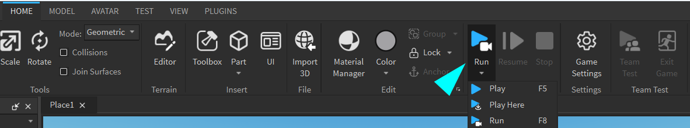Есть три варианта запуска:
- Play - запустит игру с начала - персонаж появится на спауне (Spawn - это место рождения - Start)
- Play Here - запустит игру с места, на котором находится камера. Режим очень полезен для быстрого тестирования участка уровня.
- Run - запускает игру без игрока. Вы останетесь в режиме "Свободной камеры", но в игре включится гравитация, обработка, скрипты и т.д. Режим полезен для проверки скриптов и просмотра поведения деталей.
Заметим, что мы создали какой-нибудь объект, запустили игру, а он внезапно упал куда-то вниз..
Это происходит из-за того, что у деталей по умолчанию не включен параметр Anchor (Якорь). Остановим игру, включим якорь (Anchor находится около Play) и запустим заново, деталь должна зафиксироваться там, где мы ее разместили.
Меняем внешний вид деталей
Для изменения внешнего вида объекта есть две кнопки - Material и Color:
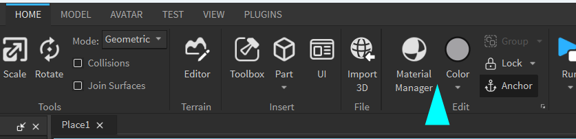Первая кнопка (Material) - меняет общий вид детали, добавляет текстуру (ткань, кирпич, стекло и т.д.).
Вторая кнопка (Color) - меняет цвет детали.
Дублирование объектов
Во время разработки игр один и тот же объект может часто повторяться, для экономии времени мы можем воспользоваться дублированием (созданием копии объекта). Это можно сделать при помощи меню (клик правой кнопкой мыши по детали -> Dublicate) или при помощи сочетания клавиш (Ctrl + D).
Сначала продублированный элемент не будет виден, т.к. он находится ровно в том же месте, где и оригинал, поэтому после дублирования объект нужно переместить.
Настройка свойств объекта
Теперь попробуем изменить свойства созданных партов. Для этого нажмем на любой из объектов ЛКМ на игровой сцене, после чего в окне Properties отобразятся параметры:
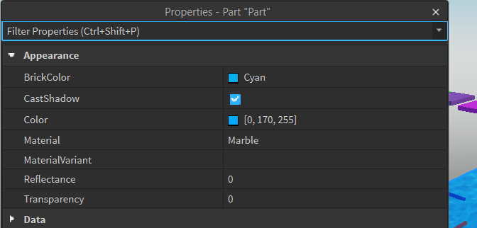Настройка внешнего вида
- BrickColor - отображает плашку и название выбранного цвета. При нажатии откроется палитра цветов, кнопке Color на верхней панели, но с одним важным отличием - цвет будет изменяться в реальном времени, таким образом намного легче подбирать нужный оттенок.
- CastShadow - включает или выключает отбрасывание теней деталью.
- Color - более точная настройка цвета. Представляет из себя стандартное представление цвета в формате HSB - квадрат с оттенком и насыщенностью и ползунок яркости справа. Также этот вид можно открыть из параметра BrickColor нажатием на кнопку More Colors
- Material - выводит список материалов и дублирует аналогичную настройку в верхнем меню.
- Reflectance - изменяет то, насколько сильно материал преломляет свет и цвет от неба, работает только с некоторыми материалами (Plastic, Smooth Plastic, Glass).
- Transparency - изменяет прозрачность детали. Изменяется от 0 до 1: - это
представление процентов в программировании. 0 = 0%, 1 = 100%, 0.37 = 37%,
и т.д.
С помощью этого параметра далее будут создаваться блоки-ловушки.
Параметры трансформации
Следующие параметры, которые необходимо изучить - параметры трансформации: Position, Orientation и Size.
Все эти параметры состоят из трех отдельных дробных величин и показывают значения по осям - X, Y, Z.
Именно эти параметры будут впоследствии изменяться для анимации объектов и создания движущихся частей.
Параметр Parent
Другой важный параметр - Parent. При нажатии на него курсор изменяется на "выбор объекта" и первый объект, по которому мы кликнем, станет родительским для выбранной детали.
Параметры взаимодействия с внешним миром
Следующая группа отвечает за взаимодействие с внешнем миром.
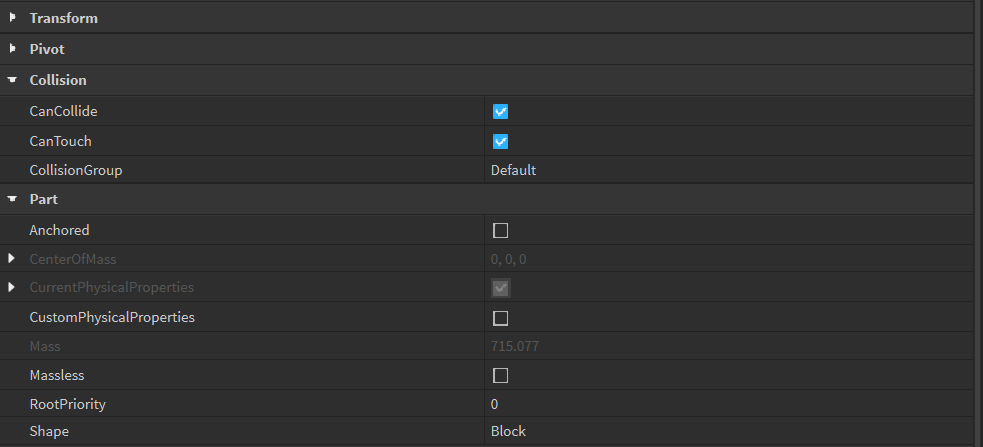-
CanCollide - самый важный здесь параметр. Это свойство позволяет
включить или выключить столкновения (коллизии) с другими объектами.
Если он выключен, игрок будет проходить сквозь блок.
Этот параметр также нужен для создания ловушек.
- CanTouch - отвечает за срабатывание событие Touched - с его помощью мы в будущем будем регистрировать столкновения деталей с другими объектами.
- Anchored - отображает «залкорен» (закреплен) ли объект. Дублирует кнопку Anchor.
- Locked - позволяет сделать объект невыбираемым.
Попрактикуемся!
Создадим ловушку для игрока)))
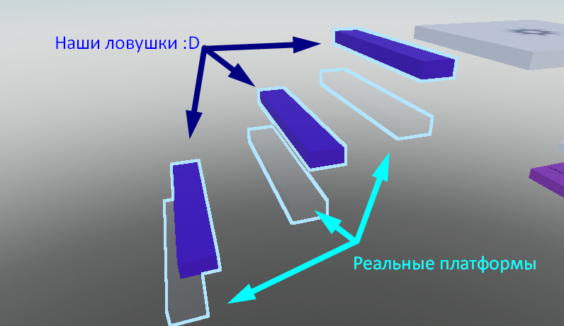Этапы:
- Создаем 2 платформы в конце уровня
- Одну сделаем видимой, но с отключенным CanCollide
- А вторую почти невидимой, но с включенным CanCollide
- Сделаем так, чтобы игроку было легко запрыгнуть на первую, а вторую разместим ровно под первой
- Спроектируем дорожку из таких "блоков-ловушек"
Дополнительно нужно сгруппировать все ступеньки в одну модель. Чтобы это сделать, необходимо с зажатой клавишей Shift кликнуть последовательно на все детали, после чего использовать сочетание клавиш Ctrl+G.
В окне Explorer появится объект Model. Если расскрыть его на стрелочку, то увидим, что внутри лежат все ступеньки. Их можно также разгруппировать, используя сочетание клавиш Ctrl+U.
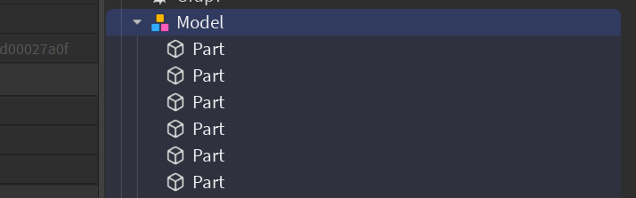Простые эффекты
Изучаем эффект дыма - Smoke
Создадим блок, после чего выделим его, перейдём во вкладку Model и с помощью кнопки "Effects" добавим Smoke.
После добавления дыма выберите эффект в окне Explorer (он будет рапсоложен под блоком), чтобы посмотреть и изменить его настройки в окне Properties.
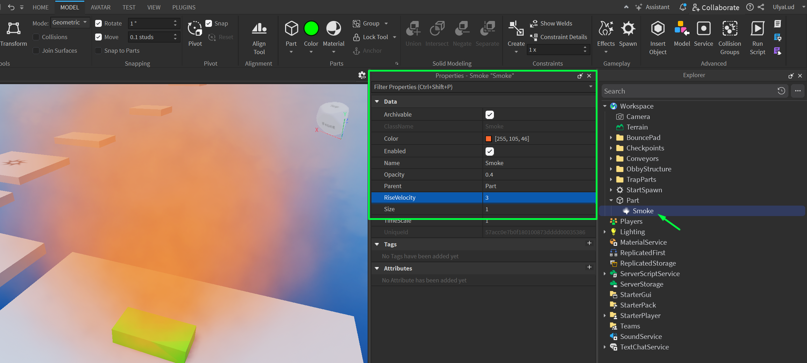У этого эффекта есть 4 настройки:
- Color - изменяет цвет дыма.
- Opacity - плотность(непрозрачность) дыма. Значение 1 сделает дым настолько плотным, что через него невозможно будет увидеть окружение.
- RiseVelocity - скорость рассеивания дыма. Если установить высокие настройки, можно увидеть систему частиц, которая генерирует этот эффект.
- Size - диаметр распространения дыма (то есть его общий размер).
Изучаем эффект огня - Fire
Теперь научимся создавать эффект огня. Особенно круто он выглядит на чекпоинтах!
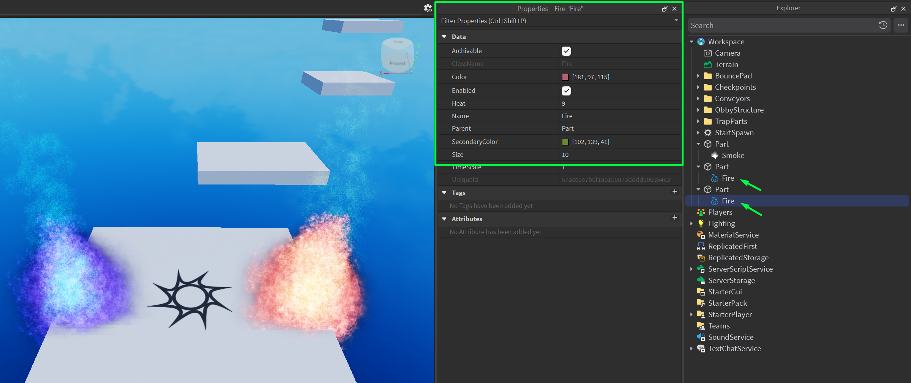У огня тоже есть настройки в окне Properties:
- Color - общий цвет дыма.
- Heat - аналог RiseVelocity, он показывает, насколько быстро и высоко будет гореть пламя.
- SecondaryColor - второй цвет огня, который можно увидеть в центре и на языках пламени.
- Size - размер эффекта. Желательно не устанавливать чересчур высокие значения, чтобы не создавать непроходимые платформы.
Домашкаа 😁
Необходимо самостоятельно создать домик из партов (block, wedge, sphere и т.д.). Заметьте, что домик состоит из крупных блоков, к которым применён материал Brick. Данный домик может пригодиться нам на следующих занятиях))
Не забудьте сохранить вашу карту, нажав File -> Save to Roblox. Чтобы выйти из карты, нажимаем File -> Close Place.
Дополнительно можно попрактиковаться с эффектами огня и дыма. Например, рядом с домом поставить костёр, из которого идёт реалистичный дым.